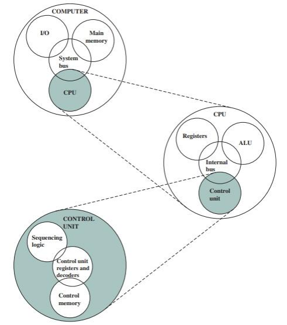
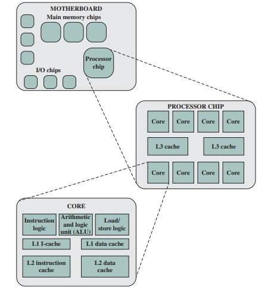
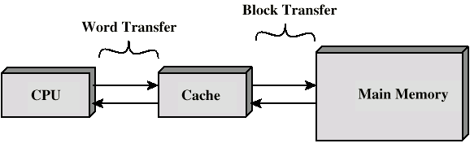
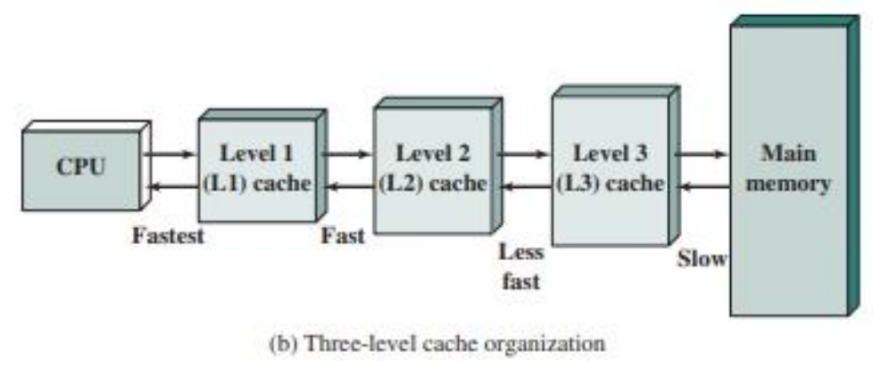
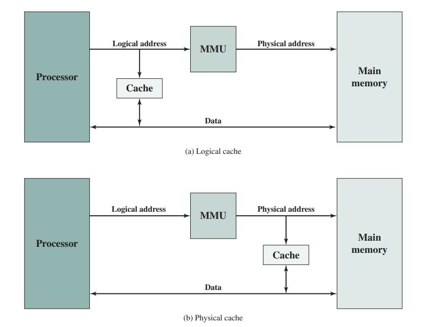
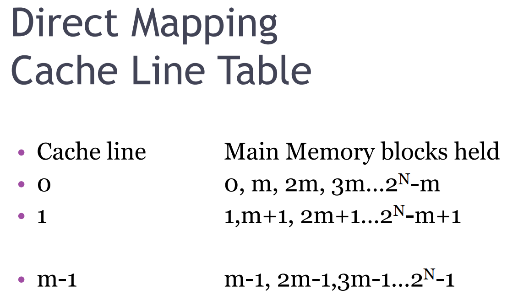
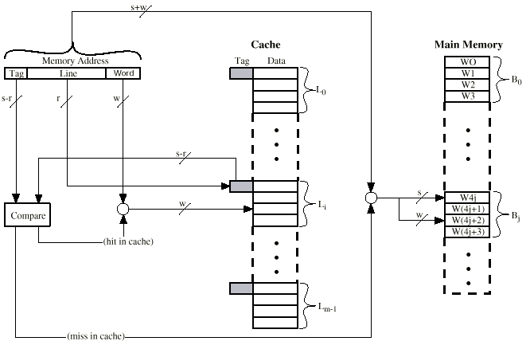
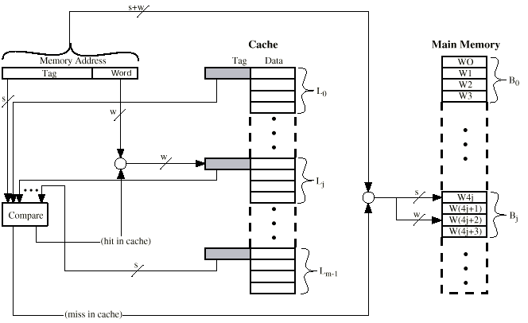
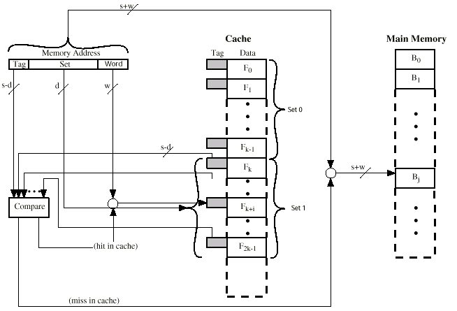

第一部分 指令与缓存
Ch1 Basic Concepts & Computer Evolution
- Architecture & Organization
- Architecture: 描述计算机能够做什么.
- 例如: ISA, 指令集架构(Instruction Set Architecture).
- Architecture 一般保持不变, 得以保持兼容性. (例如, Intel x86 系列具有相同的 Architecture)
- Organization: 描述性能如何实现.
- Organization 在不同版本之间存在不同.
- Architecture: 描述计算机能够做什么.
- 研究方法: Top-down研究方法(自顶向下)
- 系统-子系统-...
- Structure & Function
- Structure: 某个子系统中各个组成部分的相互关系.
- Function: 某个子系统的功能.
- 例如: 数据处理, 数据存储, 数据移动, 控制.
- 不同类型计算机的结构(顶层结构):
- Single Processor Computer:
- CPU(Central Procession Unit): 包含 Control Unit, ALU, Register, CPU Interconnection.
- 其中, Control Unit 又可分为: 顺序逻辑单元; 控制单元寄存器与译码器; 控制存储器等.
- Main Memory.
- I/O(Input/Output).
- System Interconnection.

- CPU(Central Procession Unit): 包含 Control Unit, ALU, Register, CPU Interconnection.
- Multicore Computer:
- Multicore Processor(多核心处理器).
- 每个核心都可称为一个CPU(Processing Unit).
- Main Memory: 可分为 CPU Memory, GPU Memory, Cache(高速缓存).
- I/O: 连接外部设备.

- Multicore Processor(多核心处理器).
- Single Processor Computer:
- Evolution of Computer:
- 处理器速度增加, 原件大小下降, 内存容量增加.
- 大量使用 pipeline(流水线), parellel execution(并行处理) 技术, 追求 Balance Design(均衡设计).
- 仍使用 Von Neuman 架构: 将指令进行存储.
Ch2 Design for Performance
注: 此处仅介绍原书 2.1 节的内容.
- Performance Balance:
- 处理器速度.
- 内存容量.
- 内存速度.
- Solution:
- 提升带宽.
- 改变动态RAM接口.
- 减少访问内存频率.
- 增加传输线带宽.
- 对于 I/O Device: 增加传输与处理速度.
- 性能衡量: 标准程序(benchmark)的运行时间.
Ch4 Cache Memory
- Memory System: Processor Register L1/L2/L3 Cache Main Memory External Memory.
- Capacity: Word Size Word Number.
- Unit of Transfer:
- Internal: 总线的宽度.
- External: 远大于一个word的大小.
- Addressable Unit.
- Access Method:
- 顺序访问(Sequential).
- 例如: 磁带.
- 直接访问(Direct).
- 例如: 机械硬盘.
- 随机访问(Random).
- 每次访问与上次访问无关.
- 例如: RAM.
- 关联访问(Associative).
- 通过关联的Tag进行访问.
- 例如: cache.
- 顺序访问(Sequential).
Memory Hierarchy(多级存储器系统)
- 从片上存储到外部存储, 存储的速度下降, 容量提升, 每个bit的造价下降.
- Performance of 2-level memory:
- 平均访问时间: .
- : 访问一级存储的时间.
- : 访问二级存储的时间.
- : 数据位于一级存储的概率.
- 平均访问时间: .
- Locality of reference: 访问具有局部性.
- 空间局部性: 相邻地址.
- 时间局部性: 循环结构.
- 在短时间内, 访问固定的cluster(簇); 长时间下, cluster 将会改变.
Cache Memory Principle
- CPU与Cache之间采用快速的Word Transfer, Cache与Main Memory之间采用相对较慢的Block Transfer.

- 缓存命中:
- hit: CPU在Cache中找到结果, 概率为 .
- 用 表示这种情况下的访问时间.
- miss: CPU在Cache中未找到结果, 概率为 .
- 进一步从Main Memory中寻找结果, 逐层传递至CPU.
- 用 表示这种情况下的访问时间.
- hit: CPU在Cache中找到结果, 概率为 .
- 平均访问时间: .
- 尽量提高 , 以减少访问时间.
- Coherency with main memory: 缓存内容与内存内容需要具有一致性.
- 即: Copy of portions(一部分) of main memory.
- Multi-level Cache:

Cache/Main Memory Structure
- Main Memory Structure:
- 若有 bits 地址, 则有 words.
- 每 个 words 组成一个 block, 共有 个 blocks. 则 .

- Cache Structure:
- 分为 个 lines.
- 每个 line 含 tag 与 block. 将Main Memory中的block依据tag中的编号填入.

Elements of Cache Design
Cache Address
- Logical Cache使用虚拟地址, Physical Cache使用物理地址.
- 两种地址通过MMU进行转换.
- 对于逻辑地址, 需要通过flush或PID bits操作进行进程切换.

Cache Size
- 随缓存大小增加, 其价格也增加.
- 缓存越多, 速度越快.
- 单一缓存的大小越大, 其速度将略微变慢.
Mapping Function(映射方式)
- Direct Mapping(直接映射).
- . 其中, 为缓存中line的索引; 为内存中block的索引; 为缓存中line的数量.


- 过程: 地址解析 确定line 对比tag Hit或Miss.
- 缺陷: 循环过程中, 可能总是提取第 行的数据, Miss的概率增加.
- . 其中, 为缓存中line的索引; 为内存中block的索引; 为缓存中line的数量.
- Associative Mapping(关联映射). (亦称为完全关联映射)
- Cache索引 与Main Memory索引 无直接关系, 随机进行两者的分配.
- 通过Tag确定Block的位置.
- CPU每访问一个地址, 需要对比所有的Tag.

- 好处: 灵活.
- Set Associative Mapping(分组关联映射).
- 将Cache分为若干个Sets, 每个Set包含多个lines.
- 对应Main memory中block的编号仅与set编号有关, 而与set中的line编号无关.
- .
- : set的个数.
- : 每个set中line的个数.
- 时, 退化为直接映射; 时, 退化为完全关联映射.
- 常用 或 , 其中后者的性能略优于前者.

Replacement Algorithms(替换方法)
- 即: 内存中block对应替换缓存中line的位置.
- 直接映射: 无选择, cache中的第 个line直接被main memory中第 个block替换.
- 关联映射: 有如下替换方法.
- Least Recently Used(LRU): 替换近期最少使用的block.
- 这种方法符合了 Locality of reference, 是最有效的.
- First In First Out(FIFO): 先进先出策略.
- Least Frequently Used(LFU): 替换hit在最少的Block.
- Random: 随机替换.
- Least Recently Used(LRU): 替换近期最少使用的block.
Write Policy(写回策略)
- 即: 说明cache与memory是否同步改写的策略.
- Write Through:
- 数据变化时同时写至 cache, main memory 及其所有相关的cache.
- 缺陷: 速度较慢.
- Write Back:
- 仅将数据写至cache, 并将对应行标记为dirty bit(或 use bit).
- block更新时, 才将cache数据写至main memory.
- 每次更新前, 若dirty bit被置1, 将其写回内存.
- 当cache中存在dirty bit时, 锁定内存中对应的block.
- Cache Cohererency(缓存一致性): 主要采用以下策略.
- Bus Watching with Write Through: 对总线进行监测.
- Hardware Tansparency: 针对main memory的操作对于所有缓存是透明的.
- Noncasheable Memory: 共享的数据不可复制至cache中.
Line Size
- 在cache大小固定时, Line Size越大, 总的Line Number就越小.
- 通常而言, Line Size的大小为 bytes.
Number of Caches
- 统一cache(Unified Cache): 用一个cache同时平衡指令与数据.
- 分离cache(Split Cache): 不同的cache分别用于指令与数据.